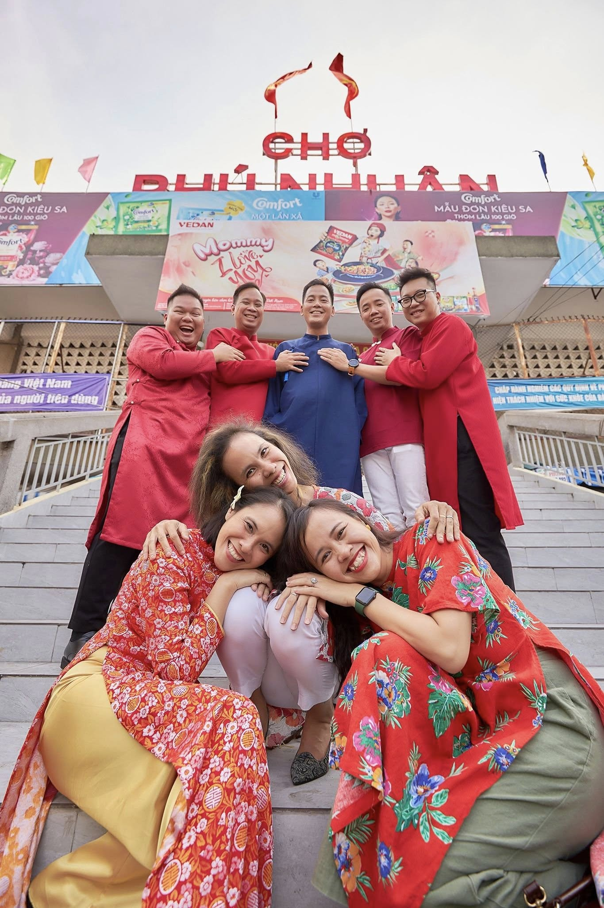
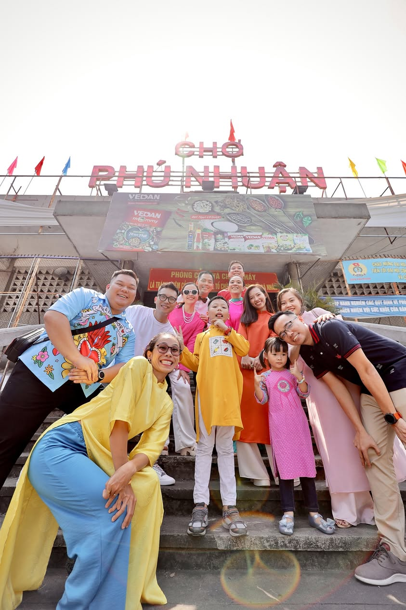
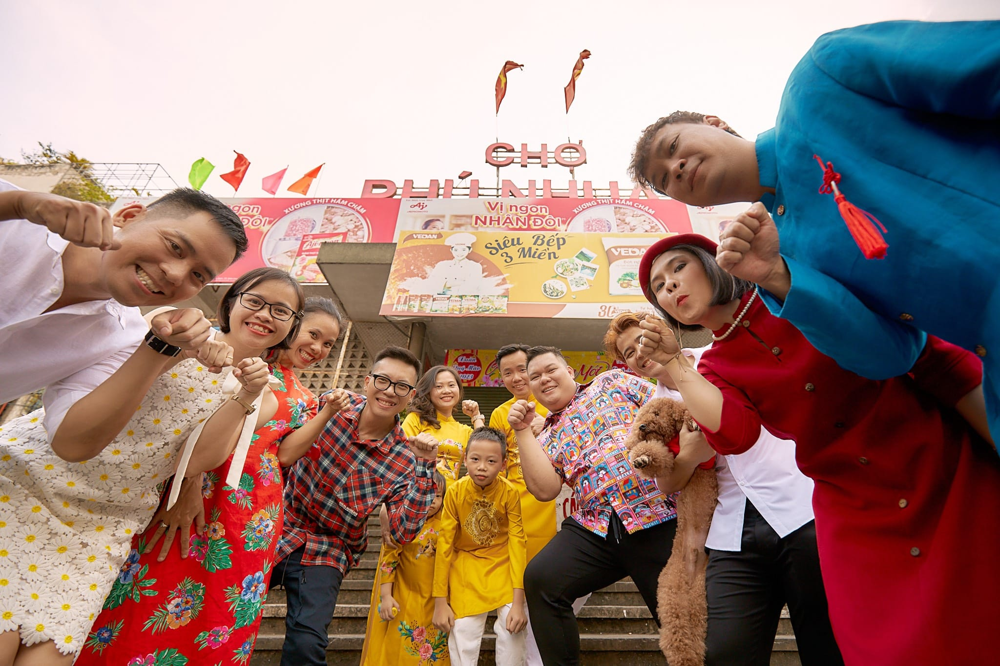
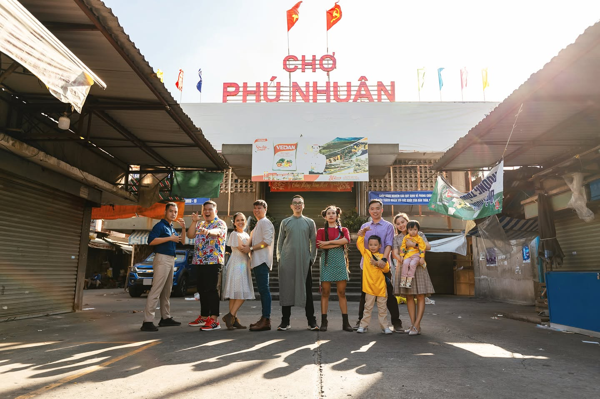
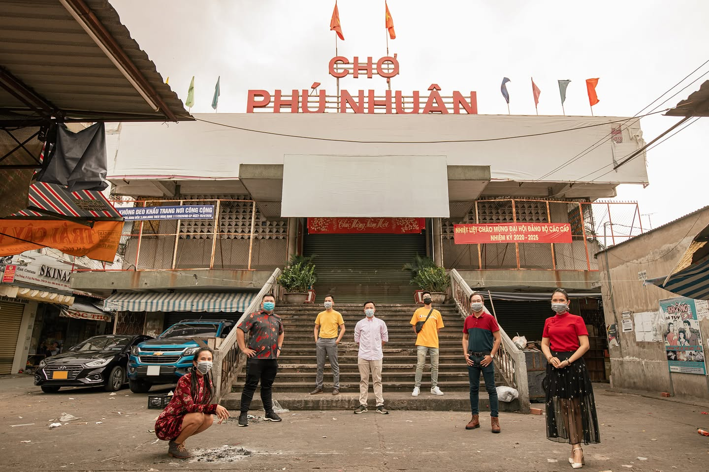
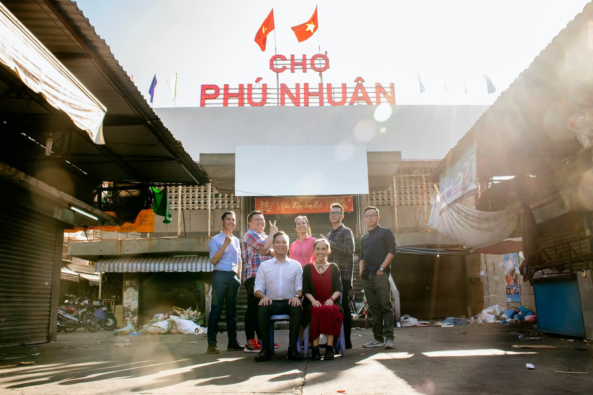
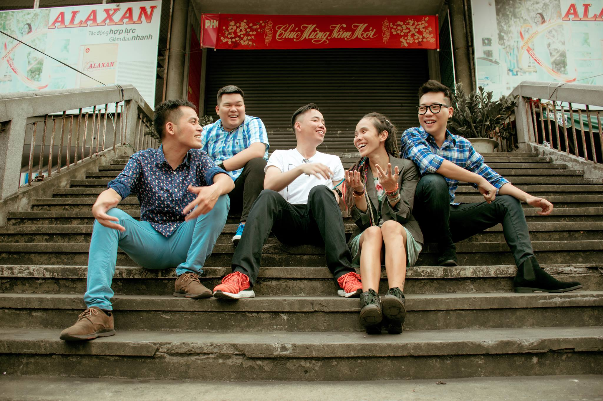

2025
Chợ Phú Nhuận cái tên vừa thân thuộc vừa gần gũi. Chớp mắt cái là đã 6 năm cái truyền thống "Ê năm nay ra chụp hình chợ Phú Nhuận nha"

2024
Chúng tôi - những tâm hồn của BTC, đã quây quần bên nhau tìm kiếm một sứ mệnh chung cho thập kỷ tới.

2023
... Vượt ngàn cây số sau 4 năm xa xứ để về có 1 tấm hình bắt trend cho bớt cay cú ^^

2022
Cả đám này quen biết nhau đã gần 20 năm. Và mỗi ngóc ngách của cái chợ Phú Nhuận đều ghi lại kỷ niệm của những đứa đã ngoài 30 này.

2021
Tiếp nối truyền thống, chợ Phú Nhuận vẫn chưa bị dở đi, để cả đám còn ra chụp được 1 tấm trong trạng thái bình thường mới. Năm sau phát huy tiếp nhé!

2020
Vẫn là Tết ở chợ, Tết đoàn viên. Là Tết cũng những đứa nhóc giờ đã 30 rồi, nhiều lo toan, mưu sinh nhưng vẫn quay quần bên nhau mỗi ngày mùng 1 Tết.

2019
Hết Tết! Khu mình sống. Bạn bè mình. Chỉ có mấy ngày này Chợ mới giải tán đám đông. Có những thứ lẽ ra nên làm từ 10 năm trước... nhưng thà có bắt đầu còn hơn không!